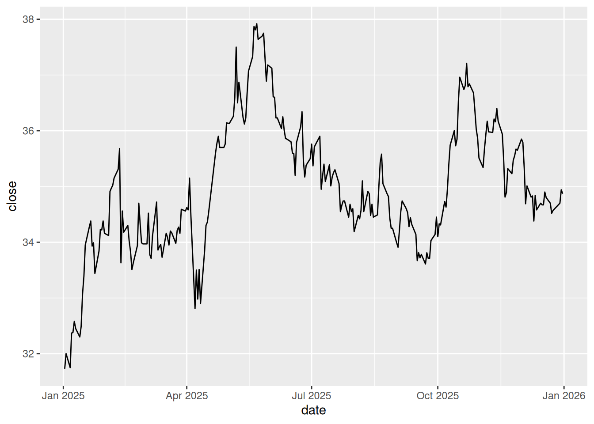
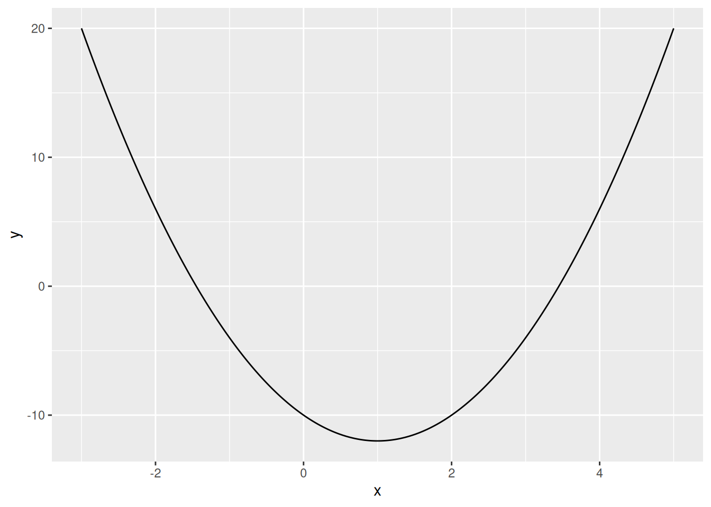

(2/3 + log(9, 2)) / sqrt(2)[1] 2.71288
Use R to calculate the following:
\frac{\frac{2}{3} + \log_2 (9)}{\sqrt{2}} Provide both the R command and numeric value in your answer.
Answer:
(2/3 + log(9, 2)) / sqrt(2)[1] 2.71288Write an R command in the box below that generates a sequence of 10 evenly-spaced values starting from 0 and ending in 1.
The first two elements of your sequence should be 0.00000000 and 0.1111111.
Your answer must use a sequence-generating function. It is not permitted to write out the full vector manually.
Answer:
seq(from = 0, to = 1, length.out = 10) [1] 0.0000000 0.1111111 0.2222222 0.3333333 0.4444444 0.5555556 0.6666667
[8] 0.7777778 0.8888889 1.0000000Consider the following two logical vectors:
a <- c(TRUE, TRUE, FALSE, FALSE)
b <- c(TRUE, FALSE, TRUE, FALSE)Write a one-line R command in the box below which returns a new logical vector where the elements are:
TRUE when the corresponding element of a is TRUE and b is FALSE; andFALSE otherwise (i.e. when either a is FALSE or b is TRUE).Your answer must use the variables a and b and the appropriate logical operators (a combination of a subset of the operators &, | and !).
Hint: The output of your command should be [1] FALSE TRUE FALSE FALSE. The reason is because:
FALSE because b is TRUE.TRUE because both a is TRUE and b is FALSE.FALSE because both a is FALSE and b is TRUE.FALSE because a is FALSE.Answer:
a & !b[1] FALSE TRUE FALSE FALSEDefine the vector:
x <- c(1, -1, 2, -2, 3, -3)Write an R command in the box below using the ifelse() function that returns the absolute value of x.
The output of your command should be [1] 1 1 2 2 3 3.
Your answer must use the ifelse() function. Use of the abs() function is not permitted for this question.
Answer:
ifelse(x > 0, x, -x)[1] 1 1 2 2 3 3Download the dataset sales-data-jan-2026.csv. The dataset contains information on the total sales of a fictitious firm from January 2026. The firm is a vintage record store chain. The store sells 3 types of products: cassette tapes, compact discs (CDs) and vinyl records. The chain has stores in 4 cities in Noord-Brabant (Tilburg, Breda, ’s-Hertogenbosch and Eindhoven). It charges the same price for each product type in each city: (€4.99 for a tape, €9.99 for a CD and €19.99 for a vinyl record).
The variable descriptions are:
product: The product type (either Tape, CD or Vinyl).city: The city (either Tilburg, Breda, 's-Hertogenbosch or Eindhoven).price: The selling price of the product.sales: The total number of units sold of that product in that city in January 2026.When reading the dataset into R, assign it to df.
What is the median of the variable sales?
Provide both the numerical answer and the R command required to obtain the answer (if the dataframe is assigned to df).
Answer:
df <- read.csv("sales-data-jan-2026.csv")
median(df$sales)[1] 124.5Part (a): Write an R command in the box below that creates a new variable in df called revenue, which is price multiplied by sales.
Answer:
df$revenue <- df$price * df$salesPart (b): Write an R command in the box below that returns the total revenue of the firm from cassette tape sales.
Answer:
sum(df$revenue[df$product == "Tape"])[1] 2664.66Write an R command in the box below using the aggregate() function that returns the total number of units sold by city.
The output of your command should be:
city sales
1 's-Hertogenbosch 414
2 Breda 236
3 Eindhoven 390
4 Tilburg 362Answer:
aggregate(sales ~ city, data = df, FUN = sum) city sales
1 's-Hertogenbosch 414
2 Breda 236
3 Eindhoven 390
4 Tilburg 362Using an appropriate function from the reshape2 package, write an R command in the box below to reshape the data such that there are 4 rows, one for each city, and the columns are:
The output should be the following:
city CD Tape Vinyl
1 's-Hertogenbosch 133 139 142
2 Breda 76 124 36
3 Eindhoven 149 124 117
4 Tilburg 90 147 125Hint: Load the reshape2 package using the command library(reshape2). You do not need to include loading this package in your answer.
Answer:
library(reshape2)
dcast(df, city ~ product, value.var = "sales") city CD Tape Vinyl
1 's-Hertogenbosch 133 139 142
2 Breda 76 124 36
3 Eindhoven 149 124 117
4 Tilburg 90 147 125Download the following dataset:
AHOLD DEL_historical_price.csv
The file was obtained from the website https://live.euronext.com/. It contains stock price data for the Dutch-Belgian multinational retail and wholesale holding company Ahold Delhaize, which owns the brands Albert Heijn, Etos, Gall & Gall and Bol.com, as well as several brands in other countries. The data spans the period January 2 to December 31 2025.
In order to analyze the data, some cleaning steps are required.
Perform the data cleaning steps below:
Note: The data after each step should match the files below. If you cannot complete a step, you can use these to proceed. For example, if you cannot do part (a), use the file resit-2025-q9a.csv to attempt part (b).
Part (a): Write an R command in the box below to read the dataset into R as df. Use the skip argument in the read.csv() function to skip the lines of metadata at the top of the file, so that the data can be read in properly. The lines of metadata are the following:
"Historical Data"
"From 2025-01-02 to 2025-12-31"
NL0011794037Answer:
df <- read.csv("AHOLD DEL_historical_price.csv", skip = 3)Part (b): Write an R command in the box below that will correctly format the Date variable to an R date.
Answer:
df$Date <- as.Date(df$Date, format = "%d/%m/%Y")Part (c): Write an R command in the box below that will sort the data by date ascending. That is, January 2 should be first and December 31 should be last.
Answer:
df <- df[order(df$Date), ]Part (d): Write an R command in the box below that creates a variable called spread which is the High variable minus the Low variable. This variable measures the volatility of the stock in a day.
Answer:
df$spread <- df$High - df$LowPart (e): Write an R command in the box below that will convert all the variable names to lower case.
Answer:
names(df) <- tolower(names(df))If you performed the data cleaning steps from the previous exercise correctly, your final dataset should match the following file: ahold-delhaize-2025.csv
Using either your cleaned data or the data from the file above, create a scatter plot with number.of.trades on the horizontal axis and spread on the vertical axis.
Choose the answer below which best interprets what you see in the plot.
number.of.trades is high, spread is usually low.number.of.trades is high, spread is usually also high.number.of.trades and spread.number.of.trades is at its highest or lowest, spread is at its highest, but for values of number.of.trades near the median, spread is at its lowest.Answer:
library(ggplot2)
ggplot(df, aes(number.of.trades, spread)) + geom_point()
# When `number.of.trades` is high, `spread` is usually also high.Using the cleaned data, plot the variable close across time. In which quarter of the year was the variable close at its highest?
Type the quarter number in the box below, where:
Answer:
[1] "LC_CTYPE=C;LC_NUMERIC=C;LC_TIME=C;LC_COLLATE=C;LC_MONETARY=C;LC_MESSAGES=ga_IE.UTF-8;LC_PAPER=ga_IE.UTF-8;LC_NAME=C;LC_ADDRESS=C;LC_TELEPHONE=C;LC_MEASUREMENT=ga_IE.UTF-8;LC_IDENTIFICATION=C"library(ggplot2)
ggplot(df, aes(date, close)) + geom_line()
# The close variable is at its highest in Q2The following 2 questions will involve working with the following mathematical function defined over all real numbers x:
f(x) = -10 - 4x + 2x^2
Plot the function between the x values -3 and +5. Add the correct options in the boxes below that best describe the plot.
Part (a): The shape of the function is a straight line / flat / U-shaped / inverse U-shaped.
Part (b): When f(x) = -10, the corresponding values of x are \_\_\_ and \_\_\_.
Part (c): At x=4, the function is downward-sloping / flat / upward-sloping.
Answer:
f <- function(x) {
y <- -10 - 4*x + 2 * x^2
return(y)
}
library(ggplot2)
x <- seq(-3, 5, length.out = 2000)
y <- f(x)
df <- data.frame(x, y)
ggplot(df, aes(x, y)) + geom_line()
# Part (a) The shape of the function is U-shaped.
# Part (b) The values of x when f(x)=-10 are 0 and 2.
# Part (c) At x=4, the function is upward-sloping.Use R to find the value of x at an extreme point of this function.
Part (a) Type this value of x in the box below.
Answer:
f_min <- optimize(f, c(-100, 100), maximum = FALSE)
f_min$minimum[1] 1Part (b): What value does the function take at the extreme point?
Answer:
f_min$objective[1] -12# or alternatively:
f(f_min$minimum)[1] -12